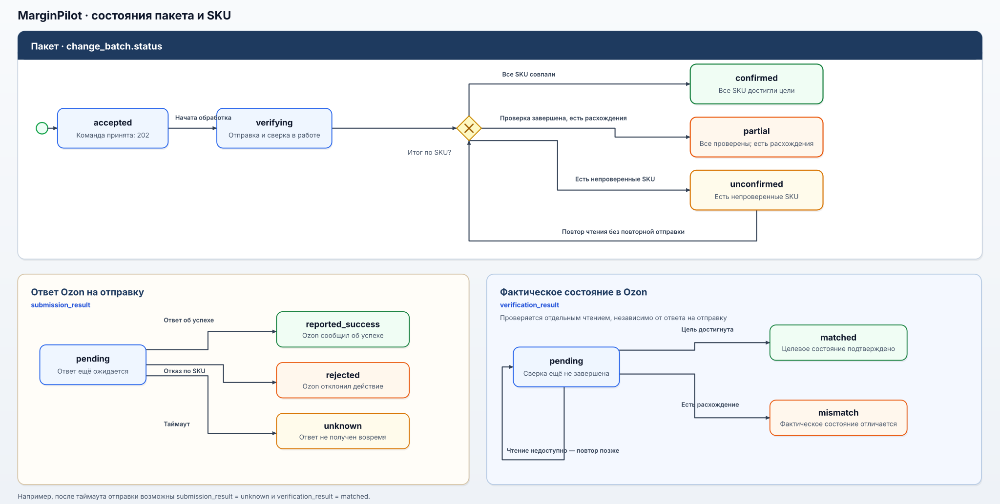

Контракт описывает обмен интерфейса с внутренним API MarginPilot. Сценарии цен, акций и план-факта соответствуют работавшему продукту; маршруты, JSON-поля и HTTP-коды восстановлены для кейса и не выдаются за исходную спецификацию. Примеры содержат вымышленные SKU и суммы. Вызовы 1С и Ozon относятся к интеграциям сервера и в этот контракт не входят.
Машиночитаемая версия контракта: OpenAPI 3.1.
1. Общие правила
- Базовый путь:
/api/v1. - Доступ требует авторизованной сессии. Способ передачи сессии не реконструируется; закрепление менеджеров за DBS/FBO не превращается в систему ролей.
- Денежные значения в JSON передаются десятичными строками в рублях, например
"1290.00"; даты — в форматеYYYY-MM-DD, время — ISO 8601 с часовым поясом. - Ответ на команду изменения не равен подтверждению результата в Ozon. Применённая цена и участие в акции проверяются сервером отдельно, автоматически.
2. Операции
| Метод и путь | Назначение | Успешный ответ |
|---|---|---|
GET /api/v1/cabinets/{cabinet_id}/skus | Список SKU для экрана оценки; поиск и постраничное чтение. | 200 |
POST /api/v1/cabinets/{cabinet_id}/evaluations | Оценка экономики выбранных цен до отправки. | 200 |
POST /api/v1/cabinets/{cabinet_id}/price-batches | Создать пакет цен и запустить его отправку в Ozon. | 202 |
POST /api/v1/cabinets/{cabinet_id}/promotion-batches | Создать пакет изменений участия в акции и запустить его отправку в Ozon. | 202 |
GET /api/v1/batches/{batch_id} | Состояние отправки и сверки по каждому SKU. | 200 |
GET /api/v1/cabinets/{cabinet_id}/skus/{seller_sku}/plan-fact | План, факт и отклонение за период. | 200 |
Список SKU поддерживает поиск через search, limit (от 1 до 100, по умолчанию 50) и cursor; план-факт — обязательные period_start и period_end. {cabinet_id} — внутренний UUID кабинета, а не ozon_client_id. Приведённые пути и способ пагинации — часть реконструкции. Пример ответа на GET /api/v1/cabinets/00000000-0000-4000-8000-000000000001/skus?limit=50:
{
"items": [
{
"seller_sku": "SKU-DEMO-001",
"name": "Товар для примера",
"thumbnail_url": "https://example.com/demo/sku-001.jpg"
}
],
"next_cursor": null
}3. Оценка экономики
POST /api/v1/cabinets/{cabinet_id}/evaluations принимает список SKU и рассматриваемое действие. Для обычной цены используется proposed_price, для входа в акцию — promotion_id и promo_entry_price. При выходе из акции новая цена не задаётся: прежнюю восстанавливает Ozon.
Пример запроса для обычных цен:
{
"action": "change_price",
"items": [
{"seller_sku": "SKU-DEMO-001", "proposed_price": "1290.00"},
{"seller_sku": "SKU-DEMO-002", "proposed_price": "890.00"}
]
}200 OK возвращает расчёт по каждому SKU, включая экономический порог и признак цены ниже него:
{
"items": [
{
"seller_sku": "SKU-DEMO-001",
"economic_threshold": "1100.00",
"planned_profit_per_unit": "90.00",
"price_check": "allowed"
},
{
"seller_sku": "SKU-DEMO-002",
"economic_threshold": "1000.00",
"planned_profit_per_unit": "-40.00",
"price_check": "below_threshold"
}
]
}Цена ниже порога — предупреждение, не ошибка HTTP-запроса. Менеджер решает, включать ли такой SKU в итоговый пакет. Перед принятием команды сервер проверяет цену и порог заново; прежний результат оценки не служит разрешением на отправку.
4. Отправка пакета
Оба POST-запроса принимают только итоговый выбор менеджера. При нажатии «Отмена» запрос не выполняется. Заголовок Idempotency-Key обязателен: повтор с тем же ключом и тем же телом возвращает прежний batch_id, а не отправляет действие в Ozon второй раз. Для другого тела тот же ключ недопустим. Отсутствующий include_below_threshold трактуется как false.
Пример пакета цен, где менеджер отдельно подтвердил один SKU ниже порога:
POST /api/v1/cabinets/00000000-0000-4000-8000-000000000001/price-batches
Idempotency-Key: demo-price-001
Content-Type: application/json{
"items": [
{"seller_sku": "SKU-DEMO-001", "proposed_price": "1290.00"},
{
"seller_sku": "SKU-DEMO-002",
"proposed_price": "890.00",
"include_below_threshold": true
}
]
}Для акции запрос содержит action: "add_to_promotion" или "remove_from_promotion"; каждый элемент указывает seller_sku и promotion_id. При добавлении обязательна отдельная promo_entry_price, при удалении она не передаётся. Подтверждение цены ниже порога применимо только к добавлению. Сервер сохраняет пользователя, время, кабинет, SKU и решение о таком подтверждении.
Пример тела запроса на добавление в акцию:
{
"action": "add_to_promotion",
"items": [
{
"seller_sku": "SKU-DEMO-002",
"promotion_id": "PROMO-DEMO-01",
"promo_entry_price": "890.00",
"include_below_threshold": true
}
]
}После проверки и сохранения пакета сервер отвечает 202 Accepted и заголовком Location: /api/v1/batches/{batch_id}. Ниже — ответ для приведённого выше пакета цен из двух SKU:
{
"batch_id": "00000000-0000-4000-8000-000000000101",
"status": "accepted",
"accepted_items": 2
}202 означает, что MarginPilot принял команду в обработку, а не что Ozon уже применил изменение. Если пакет не удалось сохранить до отправки, команда не считается принятой и запрос к Ozon не выполняется. Это правило безопасности реконструированного контракта, а не подтверждение конкретной обработки сбоя PostgreSQL в исходной системе.
5. Результат по SKU
Интерфейс получает результат через GET /api/v1/batches/{batch_id}. Пока открыта страница результата и обработка пакета не завершена, интерфейс повторяет запрос автоматически; менеджеру не нужно вручную обновлять страницу или запускать сверку. Сверку с Ozon запускает сервер. submission_result отражает ответ на отправку, verification_result — фактическое состояние после отдельного чтения Ozon.
{
"batch_id": "00000000-0000-4000-8000-000000000101",
"cabinet_id": "00000000-0000-4000-8000-000000000001",
"action": "change_price",
"status": "verifying",
"items": [
{
"seller_sku": "SKU-DEMO-001",
"submission_result": "reported_success",
"verification_result": "matched",
"target_price": "1290.00",
"actual_price": "1290.00",
"error": null
},
{
"seller_sku": "SKU-DEMO-002",
"submission_result": "rejected",
"verification_result": "pending",
"target_price": "890.00",
"actual_price": null,
"error": {"code": "OZON_REJECTED", "message": "Ozon отклонил изменение"}
}
]
}После завершения сверки тот же пакет может получить частичный результат: Ozon применил цену первого SKU, но отклонил второй. Код 200 означает лишь, что состояние пакета удалось прочитать.
{
"batch_id": "00000000-0000-4000-8000-000000000101",
"cabinet_id": "00000000-0000-4000-8000-000000000001",
"action": "change_price",
"status": "partial",
"items": [
{
"seller_sku": "SKU-DEMO-001",
"submission_result": "reported_success",
"verification_result": "matched",
"target_price": "1290.00",
"actual_price": "1290.00",
"error": null
},
{
"seller_sku": "SKU-DEMO-002",
"submission_result": "rejected",
"verification_result": "mismatch",
"target_price": "890.00",
"actual_price": "1090.00",
"error": {"code": "OZON_REJECTED", "message": "Ozon отклонил изменение"}
}
]
}Для submission_result предусмотрены pending, reported_success, rejected, unknown; для verification_result — matched, mismatch, pending. pending означает, что ответ на отправку ещё ожидается; при таймауте результат становится unknown. В этом случае сервер читает актуальную цену или статус участия, повторяет неудавшееся чтение позже и не повторяет отправку автоматически. Частичный отказ Ozon возвращается в составе пакета, а не превращает уже выданный 202 в ошибку HTTP.
Состояние пакета accepted или verifying означает незавершённую обработку; confirmed — целевое состояние подтверждено для всех SKU; partial — проверка завершена, но не все SKU достигли цели; unconfirmed — результат хотя бы одного SKU пока не удалось выяснить.

Открыть диаграмму в полном размере. Диаграмма визуализирует реконструированный контракт, а не исходный код системы. submission_result и verification_result не образуют одну линейную цепочку: после таймаута отправки возможны unknown и одновременно matched, если отдельное чтение подтвердило целевое состояние. При unconfirmed повторяется чтение, но не отправка действия.

6. План-факт
GET /api/v1/cabinets/{cabinet_id}/skus/{seller_sku}/plan-fact?period_start=2025-10-01&period_end=2025-10-31 возвращает суммы по выбранному SKU. Для каждой продажи план берётся из версии, действовавшей на момент продажи; фактические расходы учитываются за период отдельно.
{
"cabinet_id": "00000000-0000-4000-8000-000000000001",
"seller_sku": "SKU-DEMO-001",
"period_start": "2025-10-01",
"period_end": "2025-10-31",
"sold_units": 2,
"planned_profit_total": "600.00",
"actual_profit_total": "520.00",
"profit_deviation_total": "-80.00",
"profit_deviation_per_unit": "-40.00",
"actual_expenses": [
{"expense_type": "advertising", "amount": "120.00"}
]
}Если продаж нет, фактические расходы остаются в ответе, а profit_deviation_per_unit равен null. Отклонение считается как факт − план.
7. Ошибки HTTP
HTTP-код относится к запросу интерфейса к MarginPilot. Отказ Ozon по отдельному SKU после принятия пакета — это результат элемента пакета, а не новый HTTP-ответ на исходный POST.
| Код | Случай | Заголовок |
|---|---|---|
400 | Нечитаемый JSON или неверный формат параметра запроса. | Некорректный запрос |
401 | Нет авторизованной сессии. | Требуется авторизация |
404 | Не найден запрошенный кабинет, SKU или пакет. | Ресурс не найден |
409 | То же действие по SKU и акции ещё не завершено. | Действие уже выполняется |
409 | Idempotency-Key повторно использован с другим телом. | Ключ запроса уже использован |
422 | Итоговый пакет пуст. | SKU не выбраны |
422 | Значения в запросе не проходят бизнес-проверку. | Некорректные данные пакета |
422 | Не подтверждён SKU с ценой ниже порога. | Требуется подтверждение цены ниже порога |
500 | Внутренняя ошибка MarginPilot до принятия команды. | Внутренняя ошибка MarginPilot |
503 | Нужный внешний источник недоступен до принятия команды. | Внешний источник недоступен |
504 | Чтение внешнего источника до принятия команды завершилось таймаутом. | Нет ответа от внешнего источника |
title кратко называет тип ошибки и остаётся одинаковым для всех её повторений; детали конкретного запроса передаются в detail.
После ответа 202 сбой или таймаут Ozon отражается в состоянии пакета. Ошибки HTTP возвращаются в едином формате application/problem+json; ниже — пример реконструированного ответа на отсутствие подтверждения цены ниже порога:
{
"type": "urn:marginpilot:problem:threshold-confirmation-required",
"title": "Требуется подтверждение цены ниже порога",
"status": 422,
"detail": "Подтвердите отправку выбранного SKU или исключите его из пакета.",
"code": "THRESHOLD_CONFIRMATION_REQUIRED",
"seller_skus": ["SKU-DEMO-002"]
}Семантика HTTP-кодов опирается на RFC 9110, формат тела ошибки — на RFC 9457. Значения в таблице — проектный выбор для реконструкции, не свидетельство о кодах исходного API.